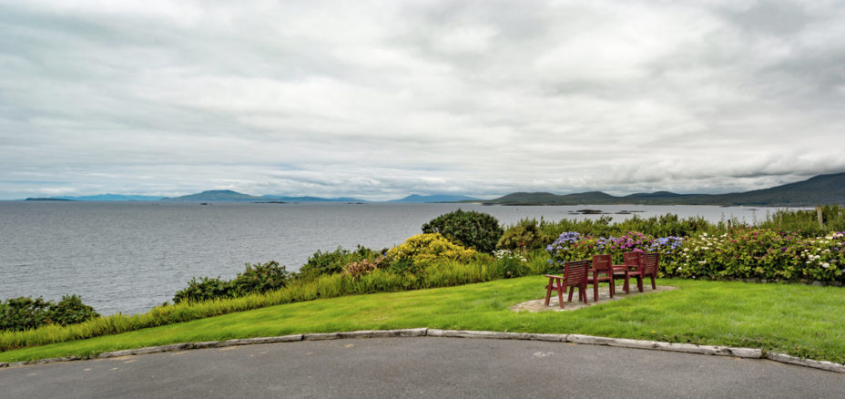
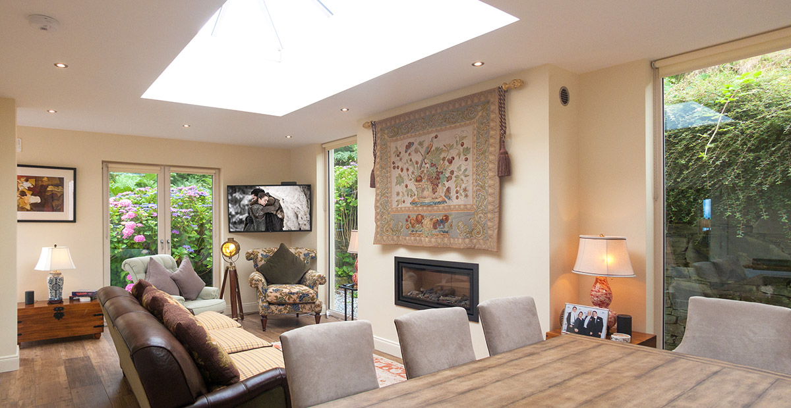
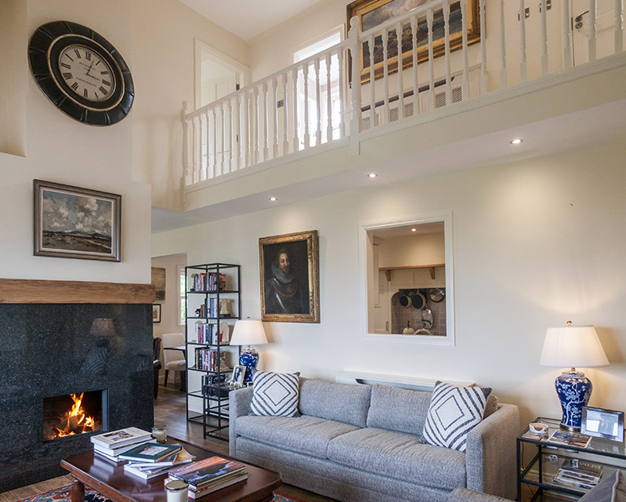

Where the Atlantic is the show
Where the Atlantic is the show

Where the Atlantic is the show

Where the Atlantic is the show
Connemara, County Galway
Connemara has long been a favourite location for anyone wanting to escape into nature, and this extravagantly thatched home invites you to do it in stylish comfort. Perched on a slope, facing the Wild Atlantic and overlooked by the mountains, with plenty to discover, it’s hard not to de-stress.
The cottage is set into a sloping bank that falls away into the ocean. Although there is no direct access to the sea at this point, there are three pristine beaches within an 8 minute drive of the house. A whimsical set of almost theatre seats on the front lawn capitalize on the spectacular views of the exposed Atlantic coastline.

Classy & Contemporary
It may be pushing it a bit to call this comfortable home a cottage given its spacious interior and premium furnishings. Most of the front aspect is allocated to a lofty sitting room, its double-height dramatized by an imposing gas fireplace safely sunk into polished black granite, and an overhanging balcony linking the upstairs accommodation. Glimpses of the kitchen through a neighbourly hatch compete with gilt framed oils of Connemara landscapes and portraiture.
Make your getaway on the picutresque Wild Atlantic Way
Nam vel ante sit amet libero scelerisque facilisis eleifend vitae urna